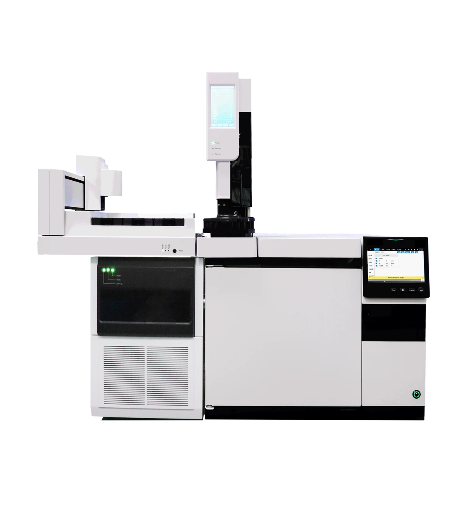

Масс-спектрометрия
GC-MS 7500
Одноквадрупольная газовая хромато-масс-спектрометрия
Одноквадрупольная система газовой хромато-масс-спектрометрии (ГХ-МС), подходящая для экологического мониторинга, контроля безопасности пищевых продуктов, фармацевтического анализа и химических испытаний. МС-модуль оснащён инертным керамическим EI-источником ионов (два филамента с программным переключением), цельнометаллическим предквадруполем и долговечным 13-каскадным дискретно-динодным электронным умножителем с независимой вакуумной системой. ГХ-модуль включает программируемый термостат на 30 ступеней/31 платформу, инжектор с делением/без деления потока и 24-позиционный жидкостный автосэмплер. Программная рабочая станция поддерживает полное сканирование, режим выбранных ионов (SIM) и чередующееся сканирование, с поиском по библиотеке NIST, собственной библиотекой, пакетным количественным анализом и автоматической генерацией отчётов.
Модуль масс-спектрометра
| Параметр | Характеристика |
| Диапазон масс | 4–1200 amu |
| Чувствительность | 1 pg OFN, S/N ≥1500:1; IDL < 10 fg OFN |
| Стабильность по массе | ±0.10 amu / 24h |
| Максимальная скорость сканирования | 20,000 amu/s (fully adjustable) |
| Разрешение | 1.0 amu |
| Динамический диапазон | 10⁶ |
| Воспроизводимость площади пика | <3% RSD |
| Тип источника ионов | EI, inert ceramic, dual filament with software switching |
| Температура источника ионов | 50–350℃ |
| Масс-анализатор | All-metal pre-quadrupole (removable and washable) |
| Детектор | 13-stage discrete dynode electron multiplier, 10kV conversion dynode |
| Вакуумная система | Backing pump 4 m³/h, turbo molecular pump 250 L/s |